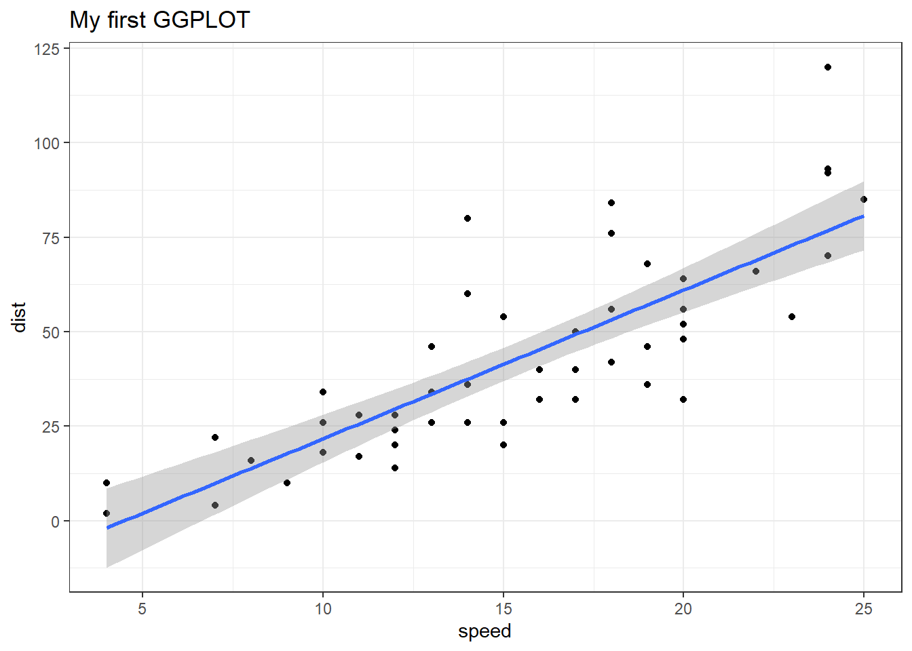

Q2. True or False? The ggplot2 package comes already installed with R?
A. False
Let’s see how we can make this figure using ggplot. First I need to install this package on my computer. To install any R package I use the function install.packages()
I will run`install.packages(“ggplot2”) in my R console not this quarto document!
Q. Which plot types are typically NOT used to compare distributions of numeric variables?
A. Network graphs
Q. Which statement about data visualization with ggplot2 is incorrect?
A.ggplot 2 is the only way to create plots in R
Before I can use any functions from add on packages I need to load the package from my “library()” with the library(ggplot2) call.
library(ggplot2)ggplot(cars)
All ggplot figures have at least 3 things(called layers). These include:
data (the input dataset I want to plot from),
aes (the aesthetic mapping of the data to my plot),
geoms (the geom_point(), geom_line(), etc. that I want to draw).
ggplot(cars)+aes(x=speed, y=dist)+geom_point()
Let’s add a line to show the relationship here
ggplot(cars)+aes(x=speed, y=dist)+geom_point()+geom_smooth(method="lm")+theme_bw()+labs(title="My first GGPLOT")
`geom_smooth()` using formula = 'y ~ x'

Q. Which geometric layer should be used to create scatter plots in ggplot2?
Q. Use the colnames() function and the ncol() function on the genes data frame to find out what the column names are (we will need these later) and how many columns there are. How many columns did you find?
A. There are 4 columns.
colnames(genes)
[1] "Gene" "Condition1" "Condition2" "State"
ncol(genes)
[1] 4
Q. Use the table() function on the State column of this data.frame to find out how many ‘up’ regulated genes there are. What is your answer?
A. There are 127 ‘up’ regulated genes.
table(genes$State)
down unchanging up
72 4997 127
Q. Using your values above and 2 significant figures. What fraction of total genes is up-regulated in this dataset?
A. 2.44% of the total genes is up-regulated in this dataset.